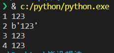

py3加载shellcode 字符型shellcode转为bytes

这个东西我一定要记录一下，卡了我挺久的
py3加载来自 CS的py64的shellcode时，传入的shellcode需要时bytes类型的，直接写死在代码里还好，但是如果是想自己在程序跑起来时输入，就有点问题了，一般来说，str->bytes都用用的 encode()。比如说这样子
1 | b = s.encode() |
假如说整个代码是这样的
1 | shellcode = input("shellcode>>>") |
这时候你会发现它根本没法工作，然后今天在这个老哥的源码里找到了解决方法，真滴牛批，长见识了
https://github.com/iframepm/FuckAV/
1 | exec('shellcode=b"'+input("shellcode>>>")+'"') |
可能就编译器会加点波浪线啥的，但是shellcode是可以跑起来的
10.30更新
刚刚发现这个操作如果写在函数里会失效，去查了一下
https://python3-cookbook.readthedocs.io/zh_CN/latest/c09/p23_executing_code_with_local_side_effects.html
简单测试一下
1 | shellcode = '123' |
上面和下面的代码是完全一样的，但是结果完全不同

可以看到在函数里的exec好像没有起到作用
先说解决方法
在exec前面加上loc = locals()，后面加上shellcode = loc[‘shellcode’]
1 | def go(): |
原理
++看了一圈发现没看明白，只知道是和局部变量，全局变量有关
locals() 函数会以字典类型返回当前位置的全部局部变量。
评论